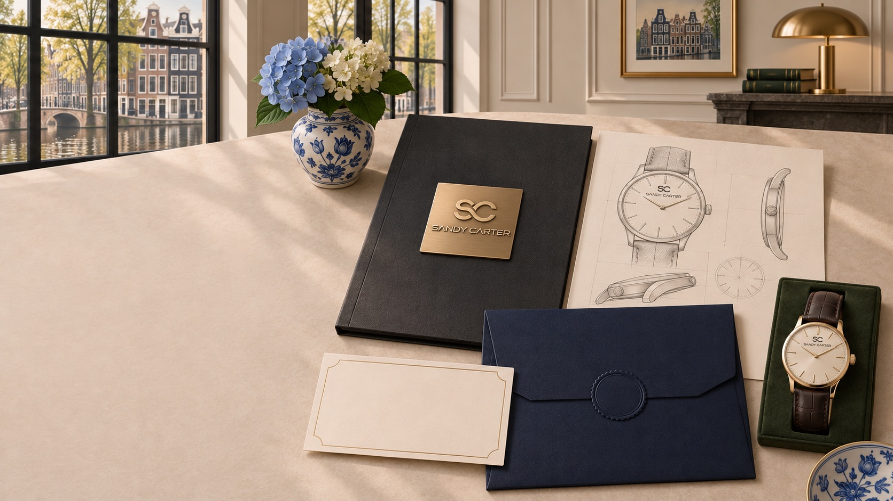

Journal · Gift guide
A watch, chosen for someone
A thoughtful gift begins with the person wearing it, rather than a list of universal rules.
TIME REFINED
Notice their favourites
Look at the colours and finishes they already wear. A familiar tone may be easier to live with than an entirely new style. Consider whether they prefer leather, bracelets or a lighter feel.
Check the practical details
Wrist fit and adjustability matter. Ask about sizing, gift receipts and the return window before placing an order, especially if you cannot try the watch on together.
Leave a little choice
If you are unsure, share a shortlist. The best choice is often the one the recipient feels drawn to, even when it differs from your first idea.
